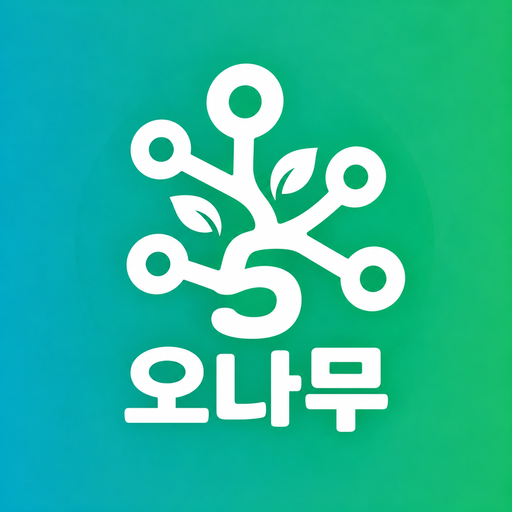

오나무
오늘의 나무위키 실검 TOP10 · @5NaMu
매일 오전 7시 · 오후 7시, 나무위키 실검 TOP10을 1분에
오나무는 나무위키 실시간 검색어 1~10위와 각 검색어가 오른 이유를 짧게 정리하는 유튜브 쇼츠 채널입니다. 이유는 언론 보도와 공식 발표 같은 확인된 자료로만 쓰고, 근거 링크를 영상 설명란에 함께 남깁니다.
오나무 업로드 도구
오나무는 채널 운영자가 자기 채널에 영상을 올리기 위해 직접 만든 개인용 자동화 도구도 함께 운영합니다. 이 도구는 운영자 본인의 Google 계정으로만 로그인하며, 다른 사람은 사용할 수 없습니다.
- YouTube API로 완성된 쇼츠를 오나무 채널에 올리고, 썸네일과 재생목록을 설정합니다.
- Google Drive에 도구가 만든 폴더에만 영상 사본을 저장합니다.
- 시청자나 다른 사용자의 정보는 수집하지 않습니다. 자세한 내용은 개인정보처리방침을 확인해 주세요.
About
오나무 (@5NaMu) is a YouTube Shorts channel that summarizes the top 10 trending searches on Namu Wiki twice a day. The 오나무 upload tool is a private, single-user app that uploads these videos to the owner's own channel through the YouTube API. It collects no data about other users. See the Privacy Policy.